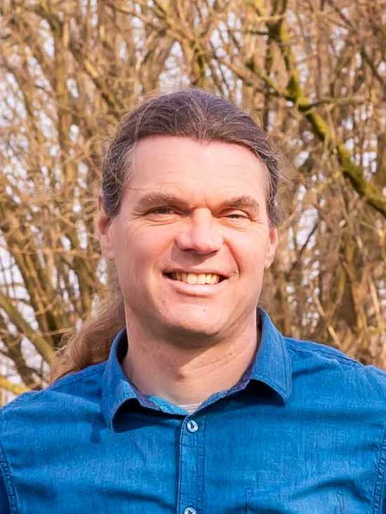

About the Artist Over de kunstenaar
‘I love it when people watch my installations and wonder how it works, when I listen to how they explain it to each other, how they take time to experience the artwork and above all what kind of meaning and expression they give it.’ ‘Ik vind het heerlijk als mensen naar mijn installaties kijken en zich afvragen hoe het werkt, om te luisteren hoe ze het aan elkaar uitleggen, hoe ze de tijd nemen om het kunstwerk te ervaren en vooral welke betekenis en expressie ze eraan geven.’
To create my kinetic light installations I use different elements and techniques, in which movement and light play a central role. I combine, change and manipulate these elements in such a way that new constructions arise — with new properties and a new appearance of their own. My goal is to stimulate people's imagination, so that in everyday life they do not have to take everything as it is, but can also play with it — making people think about the relation between individual experiences and how they relate to the world they live in. Voor het maken van mijn kinetische lichtinstallaties gebruik ik verschillende elementen en technieken, waarbij beweging en licht een centrale rol spelen. Ik combineer, verander en manipuleer deze elementen zodanig dat er nieuwe constructies ontstaan — met nieuwe eigenschappen en een nieuwe, eigen uitstraling. Mijn doel is om de fantasie van mensen te prikkelen, zodat ze in het dagelijks leven niet alles hoeven te nemen zoals het is, maar er ook mee kunnen spelen — om mensen te laten nadenken over de relatie tussen individuele ervaringen en hoe deze zich verhouden tot de wereld waarin ze leven.
The slowly repetitive and rotating movements of the installations create a meditative, playful and alienating atmosphere. The use of toys as one of the basic shapes makes the installations accessible and recognisable for all ages. De langzaam repetitieve en roterende bewegingen van de installaties creëren een meditatieve, speelse en vervreemdende sfeer. Het gebruik van speelgoed als één van de basisvormen zorgt ervoor dat de installaties toegankelijk en herkenbaar zijn voor alle leeftijden.
For commissions, festival bookings, technical riders or production specifications, please reach out at info@gertjanadema.nl. Voor opdrachten, festivalboekingen, technische riders of productiespecificaties, neem gerust contact op via info@gertjanadema.nl.